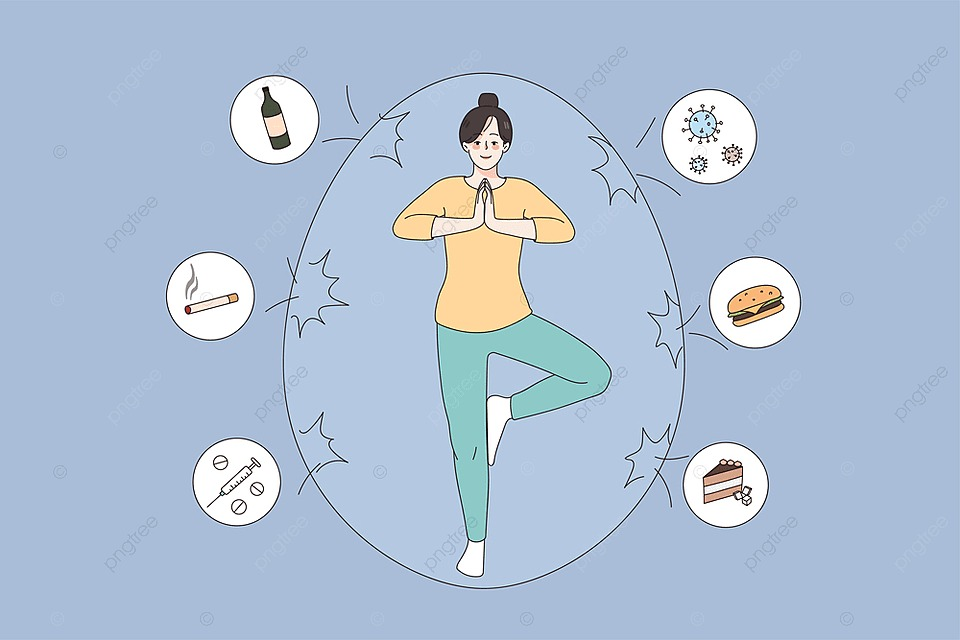
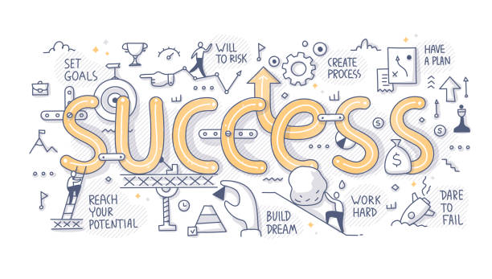
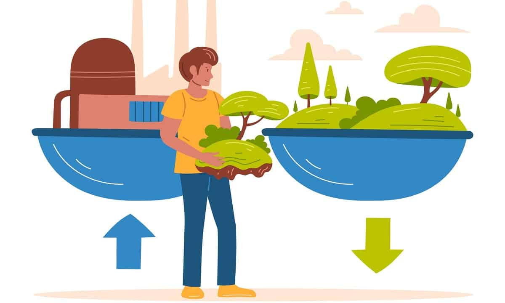

 Singkirkan Kebiasaan Buruk, Ini 7 Langkah Awal Memulai Gaya Hidup Sehat Semua orang pasti ingin selalu sehat dan terhindar dari berbagai penyakit. Sebab, dengan tubuh dan pikiran yang selalu sehat, kesejahteraan dan kualitas hidup tentunya juga dapat meningkat. Ari Cakra Kurniawan 20 September 2023
 Mengembangkan Gaya Hidup Sehat dan Seimbang: Tips Praktis untuk Kesejahteraan Anda Gaya hidup yang sehat dan seimbang adalah kunci untuk meraih kesejahteraan secara keseluruhan. Di tengah tuntutan modern yang sibuk, seringkali kita mengabaikan aspek-aspek penting dalam hidup yang dapat meningkatkan kualitas hidup kita. Ari Cakra Kurniawan 20 September 2023
Menyusun Rutinitas Pagi yang Sukses: Kunci Menuju Gaya Hidup Produktif Dalam artikel ini, kita akan menjelajahi cara menyusun rutinitas pagi yang sukses untuk mencapai gaya hidup yang lebih produktif. Ari Cakra Kurniawan 20 September 2023
 10 Contoh Gaya Hidup yang Berkelanjutan Ada banyak cara untuk hidup lebih berkelanjutan, contohnya membeli makanan musiman, makan lebih sedikit daging, dan membeli barang-barang yang dibuat menggunakan bahan daur ulang. Ari Cakra 20 September 2023
Komunikasi yang Berkualitas: Kunci Penting dalam Gaya Hidup yang Sukses Komunikasi adalah kunci utama dalam membentuk gaya hidup yang sukses. Bagaimana Anda berinteraksi dengan orang lain, berkomunikasi dengan diri sendiri, dan mengelola hubungan sosial Anda dapat memengaruhi banyak aspek dalam hidup Anda. Ari Cakra 20 September 2023
Gaya Hidup di Era Digital: Keseimbangan Antara Konektivitas dan Kesejahteraan Dalam blog ini, kita akan menjelajahi bagaimana kita bisa menjalani gaya hidup yang seimbang di era digital ini. Kehadiran teknologi digital telah mengubah banyak aspek dalam kehidupan kita, termasuk gaya hidup kita. Di satu sisi, kita lebih terhubung daripada sebelumnya... Ari Cakra 21 September 2023